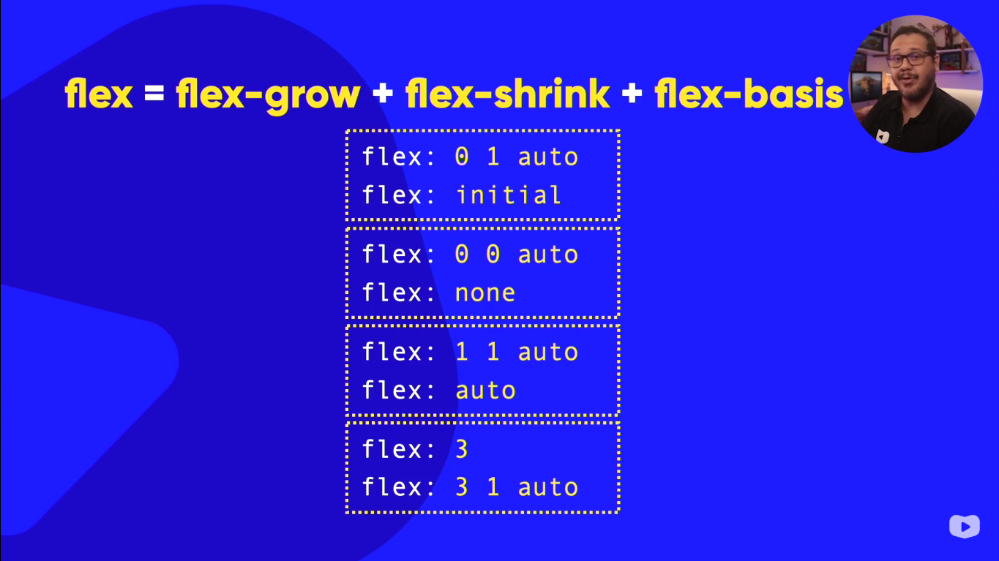

flexA propriedade flex é um atalho para configurar flex-grow, flex-shrink e flex-basis.
Sintaxe: flex: grow shrink basis;
Equivale a flex-grow: 1; flex-shrink: 1; flex-basis: 0;. Os itens crescem igualmente dividindo o espaço.
Equivale a flex-grow: 2; flex-shrink: 1; flex-basis: 0;. O item com flex: 2 cresce o dobro dos outros.
Equivale a flex-grow: 0; flex-shrink: 0; flex-basis: 200px;. O item terá largura fixa de 200px e não vai nem crescer nem encolher.
Equivale a flex: 1 1 auto;. O tamanho inicial é baseado no conteúdo, mas ainda pode crescer e encolher.
Equivale a flex: 0 0 auto;. O item não cresce, não encolhe, e o tamanho é baseado no conteúdo.
Equivale a flex: 0 1 auto;. O item usa o tamanho do conteúdo (ou width definido), não cresce, mas pode encolher.
Os itens com flex: initial mantêm o tamanho do conteúdo, enquanto o item com flex: 1 cresce para ocupar o espaço restante.
flex: 1 → divide o espaço igualmente.flex: 2 → cresce o dobro dos itens com flex: 1.flex: 0 0 Xpx → tamanho fixo.flex: auto → cresce e encolhe baseado no conteúdo.flex: none → fica fixo no tamanho do conteúdo.exemplo:
